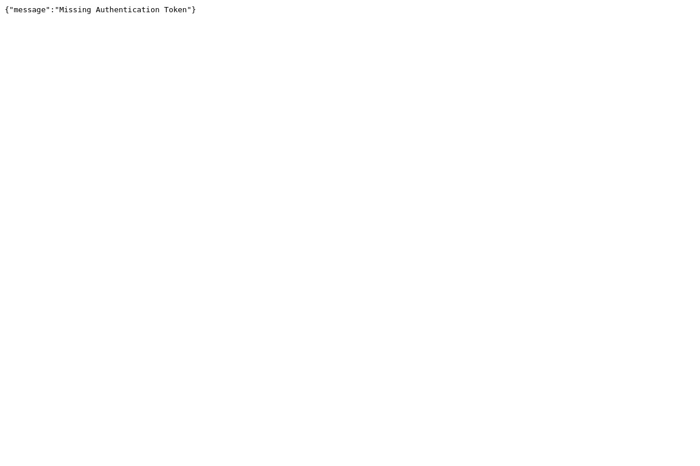

Generated by LazyRecon on Tue May 21 14:35:52 EDT 2019
Port 80 Port 443 
; <<>> DiG 9.11.4-2-Debian <<>> sendgrid-events.cloud.seek.com.au ;; global options: +cmd ;; Got answer: ;; ->>HEADER<<- opcode: QUERY, status: NOERROR, id: 42886 ;; flags: qr rd ra; QUERY: 1, ANSWER: 5, AUTHORITY: 0, ADDITIONAL: 1 ;; OPT PSEUDOSECTION: ; EDNS: version: 0, flags:; MBZ: 0x0005, udp: 512 ;; QUESTION SECTION: ;sendgrid-events.cloud.seek.com.au. IN A ;; ANSWER SECTION: sendgrid-events.cloud.seek.com.au. 5 IN CNAME d5tvbomi4004d.cloudfront.net. d5tvbomi4004d.cloudfront.net. 5 IN A 52.84.248.45 d5tvbomi4004d.cloudfront.net. 5 IN A 52.84.248.91 d5tvbomi4004d.cloudfront.net. 5 IN A 52.84.248.43 d5tvbomi4004d.cloudfront.net. 5 IN A 52.84.248.106 ;; Query time: 166 msec ;; SERVER: 192.168.58.2#53(192.168.58.2) ;; WHEN: Tue May 21 14:35:52 EDT 2019 ;; MSG SIZE rcvd: 168
sendgrid-events.cloud.seek.com.au is an alias for d5tvbomi4004d.cloudfront.net. d5tvbomi4004d.cloudfront.net has address 52.84.248.106 d5tvbomi4004d.cloudfront.net has address 52.84.248.43 d5tvbomi4004d.cloudfront.net has address 52.84.248.91 d5tvbomi4004d.cloudfront.net has address 52.84.248.45
HTTP/1.1 301 Moved Permanently Server: CloudFront Date: Tue, 21 May 2019 18:35:53 GMT Content-Type: text/html Content-Length: 183 Connection: keep-alive Location: https://sendgrid-events.cloud.seek.com.au/ X-Cache: Redirect from cloudfront Via: 1.1 c4d96ddd4edd5b96e9318ad3f85a4532.cloudfront.net (CloudFront) X-Amz-Cf-Id: MiHQ90xjk9cN1NiK61akxbecTqLRBss4v02-n5mTQcVN7iH9IuLmJA==
nmap -sV -T3 -Pn -p3868,3366,8443,8080,9443,9091,3000,8000,5900,8081,6000,10000,8181,3306,5000,4000,8888,5432,15672,9999,161,4044,7077,4040,9000,8089,443,7447,7080,8880,8983,5673,7443 Starting Nmap 7.70 ( https://nmap.org ) at 2019-05-21 14:35 EDT Nmap scan report for sendgrid-events.cloud.seek.com.au (52.84.248.43) Host is up (0.087s latency). Other addresses for sendgrid-events.cloud.seek.com.au (not scanned): 52.84.248.91 52.84.248.45 52.84.248.106 rDNS record for 52.84.248.43: server-52-84-248-43.tpe52.r.cloudfront.net Not shown: 32 filtered ports PORT STATE SERVICE VERSION 443/tcp open ssl/http Amazon CloudFront httpd Service detection performed. Please report any incorrect results at https://nmap.org/submit/ . Nmap done: 1 IP address (1 host up) scanned in 17.06 seconds